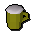

")
Ranged - Extra Features
Ranging Guild | Summoning Familiars | Ava's Items | Ranger's Aid| Ranging and Extreme Ranging Potions | Dungeoneering | Quests
Ranging Guild

You must have at least level 40 Ranged to enter. Once in there, you can take part in the Ranging Guild game.
Training is essential, and in the Ranging Guild you can get ample practice.
To train, join the archers in the middle tower. You will need a longbow due to the distance to the rival towers.
Don't want to train, but need items? Participate in the ranging competition. Speak to the competition judge and, for 200 coins, you may compete.
In the competition, you earn tickets. You can redeem these tickets for items from the ticket merchant, located in the northern part of the complex.
Normal, studded and hard leather armour, and accessories such as vambraces, chaps, cowls and coifs, can be purchased from the armour salesman in the Ranging Guild.
Need more weapons? There is an excellent selection available from the bow salesman, who is located right next to the armour salesman.
If you want throwing weapons, the tribal weapons salesman has an assorted range of javelins and throwing axes.
Enjoy Crafting? Well, you can also get your hides cured into pieces of leather by the leatherworker (in the northern part of the guild) ready for Crafting.
The Ranging Guild brings all your Ranged needs to you, so make sure you visit often.
Summoning Familiars
Using the Summoning skill, you'll find that there are a few familiars that might be useful for training your Ranged. Of particular note is the spirit scorpion, whose special move can poison your Ranged attacks while you fire them.
Ava's Attractor / Ava's Accumulator
You must complete Animal Magnetism to receive Ava's Attractor or Accumulator.
![[image: ava's attractor]](../../img/main/kbase/items/quests/ava_attractor.gif "ava's attractor") The Attractor works through a combination of hard science and strange magic, which allows it to accumulate lost arrowheads, as well as arrow shafts and feathers, as you wander the landscape. Because of the laws of magnetics, the Attractor will only gather iron or steel arrowheads. If you complete Ava's quest with a Ranged level between 30 and 49, you will receive Ava's Attractor, which will collect iron arrows; if you have a Ranged level of 50 or higher, you will receive Ava's Accumulator, which will collect steel arrows - there is no higher upgrade.
The Attractor works through a combination of hard science and strange magic, which allows it to accumulate lost arrowheads, as well as arrow shafts and feathers, as you wander the landscape. Because of the laws of magnetics, the Attractor will only gather iron or steel arrowheads. If you complete Ava's quest with a Ranged level between 30 and 49, you will receive Ava's Attractor, which will collect iron arrows; if you have a Ranged level of 50 or higher, you will receive Ava's Accumulator, which will collect steel arrows - there is no higher upgrade.
If you have the 'lower level' Attractor but later reach a Ranged level of 50, you can talk to Ava who will explain what she needs to upgrade it to collect steel arrows.
Every so often Ava's device will manage to pick up a few other metallic items like throwing knives and clockwork mice.
In addition to this, the device will collect most of your own arrows as you fire them, saving you from having to pick them up.
Ranger's Aid
 The ale for today's bowmen, Ranger's Aid, is not one that can be brewed - its recipe a closely held secret of the owners of the newly refurbished Poison Arrow pub in East Ardougne. The barkeep, Marion, will gladly sell you a pint of Ranger's Aid for 25 coins, or, to give your arrows that little extra zing, mature Ranger's Aid at 50 coins. Ranger's Aid will boost your Ranged skill by 2, but temporarily reduce your Defence by 2-6 points. The mature version boosts Ranged by 3, but decreases Defence by 3-7. Both will also heal your life points by 10.
Ranging and Extreme Ranging Potions
![[image]](../../img/main/kbase/items/potions/other_potions/rangepotion.gif) |
It is possible for Members to drink ranging or extreme ranging potions to temporarily increase their Ranged skill. Please see the Herblore section of the Manual for more details. |
Ranged Training in Dungeoneering
It is possible to train all of your skills while dungeoneering, and Ranged is no exception. Arrows can be found or fletched, giving you a ready stock of ammunition to fight Daemonheim's minions. You can also gain Ranged experience by completing ranged skill doors.
- To find out more about skill doors and the basics of dungeoneering, please click here
- To find out about ranged combat in Daemonheim, click here
- To find tables of ranged equipment, click here
Quests Providing Ranged Experience
For quests that specifically give Ranged experience as a reward, please refer to the Ranged Rewards page.
Click here to view the Ranged FAQs

More articles in
Ranged
|
|
|
Further Help
If this article does not help you, you may find the following sections of the RuneScape site helpful:
|
|